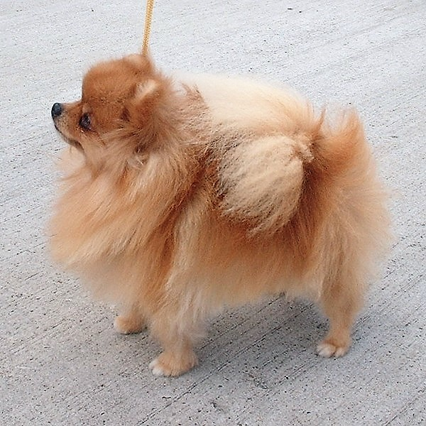

Собаки как люди. Есть тихие и покладистые. А есть своенравные и капризные. Проблема в том, что понять особенные свойства приобретаемого питомца сразу нельзя. По первой-то они все милые щеночки.Так и наш шпильмец, славный был очень, с грустными слезливыми глазами. Его даже продавали за половину цены. Почему, спрашивается? Якобы побыстрее пристроить хотели в добрые руки.
Принесли мы свой комок счастья домой. Маленький, тщедушный, на тонких дрожащих ножках. Уж больно порода хрупкая-ШПИЦ!
Спросить у Яндекса
фото шпица с абсолютной ссылкой
фото шпица с относительной ссылкой